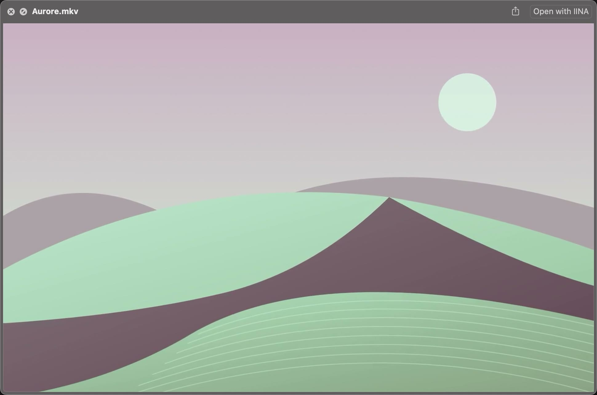

Un aperçu de vos MKV, WebM et d’autres vidéos, directement dans Finder. Sélectionnez un fichier, ouvrez Quick Look et lancez la lecture sans ouvrir un lecteur séparé.
Application prévue gratuite · Version publique en préparation

Capture réelle de Quick Look avec VideoGlance 1.1, build 32, sur un clip synthétique. Version de développement.
Dans votre Finder
De l’aperçu à la lecture, dans la même fenêtre.
Trois captures réelles, sans son. Lancez chaque vidéo à votre rythme.
01
Espace, et la vidéo s’ouvre.
Sélectionnez une vidéo puis appuyez sur Espace ou Commande-Y. La lecture démarre après l’ouverture de Quick Look. Espace et Échap ferment l’aperçu ; Finder conserve la navigation entre fichiers et la gestion du plein écran.
Au survol, la barre donne accès à la progression, aux sauts de 15 secondes, au volume et aux vitesses de lecture.
8 s · Un MKV sélectionné, un appui sur Espace : Quick Look s’ouvre et la lecture démarre. L’indication de la touche est ajoutée à la capture.02
Une commande discrète dans la colonne.
La colonne d’aperçu commence par une image fixe. Survolez-la, puis cliquez au centre pour lire ou mettre en pause. L’anneau indique la progression : un clic ou un glissement permet de changer de position sans interrompre la lecture.
8 s · Le bouton central lance la lecture, l’anneau progresse, puis un second clic met en pause. Le cadre se concentre sur la colonne.03
Repérez vos vidéos par leur image.
Les vues Finder qui affichent des miniatures reçoivent une image représentative, en conservant les proportions de la vidéo. VideoGlance lit le fichier directement, sans préparer une copie complète pour l’aperçu.
6,5 s · Trois MKV, trois images représentatives : la sélection passe d’une vidéo à l’autre dans la vue par icônes.
Formats et Mac
Une compatibilité décrite avec ses limites.
Formats déclarés
MKV
WebM
AVI
FLV / F4V
WMV
OGV / OGM
TS / MTS / M2TS
RM / RMVB
Les essais incluent notamment MKV H.264 et WebM VP9. Un conteneur ne garantit pas la lecture de tous ses codecs et de toutes ses pistes : la couverture des formats reste à compléter.
Configuration essayée
Le minimum technique du paquet est macOS 15.0. Seul macOS 15.7.9 sur Mac Apple Silicon a été essayé. Les autres versions et les Mac Intel ne sont pas validés ; macOS 14 n’est pas couvert.
Les aperçus MP4, MOV, M4V et 3GP restent fournis par Apple. Le double-clic continue d’ouvrir votre lecteur habituel.
Disponibilité
Gratuit, en préparation.
VideoGlance sera gratuit, sans compte ni abonnement. La distribution publique signée et l’installation Homebrew sont en cours de préparation : aucun téléchargement public ni commande Homebrew n’est disponible aujourd’hui.
Le guide explique les commandes et les limites connues. Les étapes d’installation, de mise à jour et de désinstallation accompagneront le premier livrable vérifié.
Une fois l’application installée, macOS demande les aperçus et les miniatures à ses extensions. La fenêtre d’information VideoGlance peut être fermée.
VideoGlance remplace-t-il mon lecteur vidéo ?
VideoGlance ajoute les aperçus Quick Look et les miniatures Finder. Le double-clic garde votre application par défaut ; il n’y a pas de bibliothèque vidéo à gérer.
Quels réglages sont disponibles pendant la lecture ?
La fenêtre Quick Look propose la recherche dans la vidéo, des sauts de 15 secondes, le volume et des vitesses de 0,5× à 2×. La colonne conserve le bouton central et son anneau. Le découpage, AirPlay, Picture in Picture et la sélection manuelle des pistes ne sont pas fournis.
Comment décrire un problème d’aperçu ou de miniature ?
Notez la version de macOS, le type de Mac, la version et le build de VideoGlance, puis les étapes qui reproduisent le problème. Le guide complet aide à distinguer un fichier non lu, une extension absente et une ancienne miniature en cache.